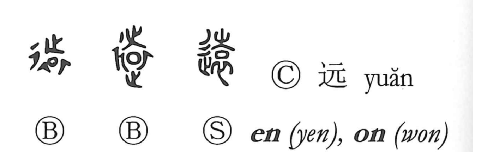

遠

Kun: tooi, toozakaru, toozakeru | On: en
far ・ distant ・ remote ・ to go far ・ to keep away
Explanation
遠 combines 辵, going along a road, with the sound element 袁. 袁 pictures a dead person’s garment with a piece of jade at the neckline. The jade renews the vital spirit for the journey. At the head of the body, 之, a footprint meaning ‘go,’ marks the departure toward the other world. The upper 土 is a later change of that footprint.
袁 is itself the earlier graph for sending the person far away. Adding 辵 makes the journey explicit. From that departure, 遠 comes to mean far, distant, or remote.
Distance can also be felt in time or relationship. The character therefore extends to a long interval, something removed from the present, or the act of keeping someone or something at a distance.